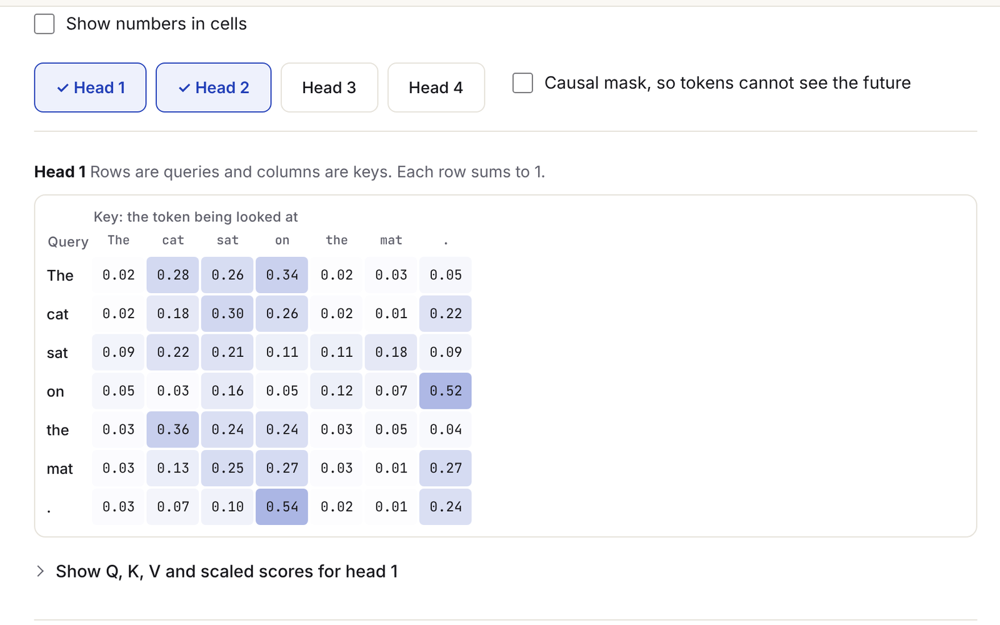

PaperLab
Type a sentence and watch it travel through one layer of the Transformer from Attention Is All You Need.
- 19unit tests on the math
- 58 KBgzipped
- 96 / 100 / 100 / 100Lighthouse mobile
- Problem
- Papers explain attention in equations that few people can picture.
- Build
- A React and TypeScript app that runs real attention math on toy weights in the browser, with per-head heatmaps and step controls.
- Result
- 19 unit tests on the math, about 58 KB gzipped, and Lighthouse mobile scores of 96 for performance and 100 in the other three.